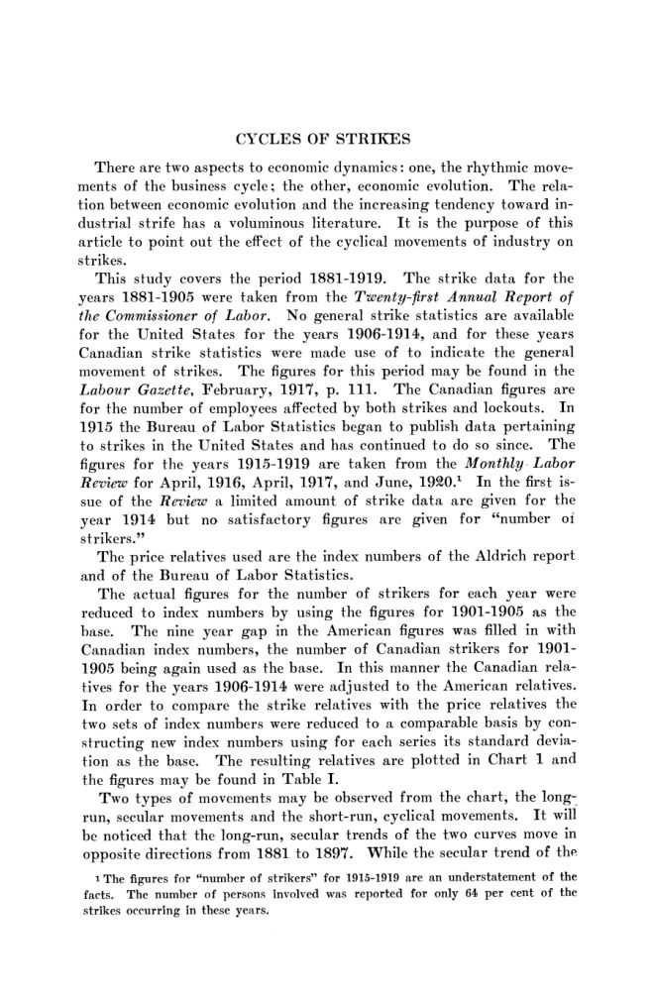

Hansen e as greves ao longo do ciclo
Leitura: 7 min
Com séries de grevistas e de preços de 1881 a 1919, Alvin H. Hansen sustenta que as greves acompanham o ciclo em sentido inverso quando os preços caem no longo prazo e no mesmo sentido quando sobem.


Entre 1906 e 1914 não havia estatística geral de greves nos Estados Unidos. Para atravessar esses nove anos, Alvin H. Hansen, da University of Minnesota, recorreu ao Canadá: usou os números de empregados afetados por greves e locautes publicados na Labour Gazette e os encaixou na série americana. Assim montou uma série de grevistas de 1881 a 1919 e pôde compará-la, ano a ano, com os preços. O resultado, publicado em seis páginas na American Economic Review de dezembro de 1921, é um argumento curto: o sinal da relação entre greves e ciclo depende da tendência de longo prazo dos preços.
Hansen começa por separar dois aspectos da dinâmica econômica. Um é o movimento rítmico do ciclo de negócios; o outro, a evolução econômica. A relação entre a evolução e a tendência crescente ao conflito industrial, diz, já tinha literatura volumosa. Seu propósito é mais restrito: apontar o efeito dos movimentos cíclicos da indústria sobre as greves.
De onde vêm os números?
As fontes são três, uma para cada trecho do período. De 1881 a 1905, os dados de greves vêm do Twenty-first Annual Report of the Commissioner of Labor. De 1906 a 1914, na falta de estatística americana, a canadense indica o movimento geral; os números do Canadá somam greves e locautes. Em 1915, o Bureau of Labor Statistics passou a publicar dados sobre greves nos Estados Unidos, e Hansen toma os números de 1915 a 1919 da Monthly Labor Review. O primeiro número dessa revista trazia algo sobre 1914, mas sem números satisfatórios de grevistas.
O autor registra uma limitação nos dados mais recentes: os números de grevistas de 1915 a 1919 subestimam os fatos, porque só em 64% das greves desses anos foi informado o número de pessoas envolvidas. Para os preços, usa os números-índice do Aldrich report e do Bureau of Labor Statistics.
A montagem segue três passos. Primeiro, o número de grevistas de cada ano foi convertido em número-índice, com base nos anos de 1901 a 1905. Segundo, a lacuna de nove anos foi preenchida com índices canadenses, também com base em 1901–1905, de modo que os relativos do Canadá para 1906–1914 ficaram ajustados aos americanos. Terceiro, para comparar greves e preços, as duas séries foram postas em escala comum, tomando o desvio-padrão de cada uma como base.
Por que a tendência dos preços muda a relação?
O gráfico das duas séries mostra dois tipos de movimento: o secular, de longo prazo, e o cíclico, de curto prazo. De 1881 a 1897, as tendências seculares andam em sentidos opostos. Isso leva Hansen a dividir o período em dois: o de preços em queda, de 1881 a 1897, e o de preços em alta, de 1898 a 1919.
A hipótese de trabalho é que o movimento cíclico das greves não será o mesmo nos dois casos. Com preços em queda no longo prazo, o trabalho fica na defensiva. Boa parte da luta se volta contra a redução de salários, o aumento da jornada e a piora geral das condições; quanto aos salários, trata-se de manter o que já foi conquistado. Como a pressão por cortes é maior na depressão, é nesses anos que a disputa entre trabalho e capital deve ser mais dura e o número de grevistas, maior.
Com preços em alta, a situação se inverte. Os empregadores já não tentam cortar salários, mas impedir aumentos, e o trabalho, diante do custo de vida crescente, não pode se contentar com a defesa do que já obteve: precisa passar à ofensiva. A disputa se torna mais acirrada nos anos de prosperidade, por duas razões: é neles que sobem os preços e o custo de vida, e os grandes lucros desses anos abrem uma disputa sobre sua divisão. Daí duas previsões: correlação inversa entre grevistas e ciclo quando a tendência dos preços é de queda, e correlação direta quando é de alta.
O que mostram as correlações?
Para testar a hipótese, Hansen precisa isolar as flutuações cíclicas. No período de 1881 a 1897, elimina as tendências seculares pelo método dos momentos e converte os resíduos em relativos, de novo com o desvio-padrão de cada série como base. No gráfico correspondente, a série de greves aparece invertida, e a série de preços é tomada como representativa dos movimentos do ciclo de negócios. A correlação encontrada é inversa, e o autor conclui que, nos períodos de preços em queda, as greves tendem a aumentar na depressão e a diminuir na prosperidade.
No período de alta, os anos de guerra exigem cuidado. O enorme aumento de preços e de greves daqueles anos era, diz Hansen, anormal, e por isso ele analisa 1898–1914 separadamente. As tendências foram eliminadas pelas linhas de regressão obtidas pelo método dos momentos, e os desvios em relação à média de cada série foram divididos pelo respectivo desvio-padrão. O resultado é uma correlação direta considerável.
“As greves se correlacionam inversamente com o ciclo de negócios nos períodos de queda prolongada dos preços.” (“Strikes correlate inversely with the business cycle in periods of long-run falling prices”)
A conclusão final é simétrica. A hipótese, diz o autor, parece confirmada em medida considerável pelos fatos: as greves variam em sentido contrário ao ciclo quando os preços caem no longo prazo e no mesmo sentido quando sobem. A tabela que fecha o artigo traz os relativos de preços e de greves para 1881–1919 e para cada subperíodo.
Qual é o alcance do resultado?
O artigo trata apenas do efeito do ciclo; a relação entre evolução econômica e conflito industrial fica, por escolha declarada, fora do estudo. A série de grevistas combina três fontes, e uma delas é de outro país. Os coeficientes medem a associação entre séries anuais padronizadas; a leitura causal vem da hipótese sobre a posição defensiva ou ofensiva do trabalho, que o autor apoia no dado sobre as greves contra redução de salário.
Na minha leitura
Na minha leitura, o interesse do artigo está na ideia de que a correlação entre duas séries pode mudar de sinal conforme o regime de fundo. Hansen não procura uma relação estável entre greves e ciclo; procura a condição que a inverte e a encontra na tendência secular dos preços. É um raciocínio que separa o curto do longo prazo e trata o segundo como o ambiente em que o primeiro opera.
O método também chama atenção. Remover a tendência, padronizar pelo desvio-padrão e só então comparar é o procedimento que permite falar de ciclo sem confundi-lo com crescimento. A emenda da série americana com a canadense mostra o custo prático da falta de estatística oficial: para medir um fenômeno nacional, foi preciso usar o movimento de outro país como aproximação.
Glossário
- Tendência secular
- movimento de longo prazo de uma série, separado das oscilações do ciclo.
- Método dos momentos
- procedimento estatístico usado aqui para ajustar a linha de tendência de cada série.
- Desvio-padrão
- medida da dispersão de uma série em torno de sua média.
- Coeficiente de correlação de Pearson
- medida, entre -1 e +1, de quanto duas séries variam juntas.
- Locaute
- paralisação decidida pelo empregador, que fecha o estabelecimento aos trabalhadores.
Fontes
- Cycles of Strikes — Alvin H. Hansen (University of Minnesota) (pp. 616–621). JSTOR · Internet Archive (PDF)
- Edição completa, com os demais artigos: Nº 172 do Arquivo.
Documento em domínio público (EUA, publicado antes de 1931), via JSTOR Early Journal Content e Internet Archive. Resumo e comentário do autor deste site, sem afiliação com a American Economic Association. Encontrou um erro? Escreva: a correção é publicada no próprio texto, com data.
↑ Nº 172 · Gregg, a frota do governo, os ciclos de greves e a regulação de preços Tugwell e a teoria por trás da regulação →